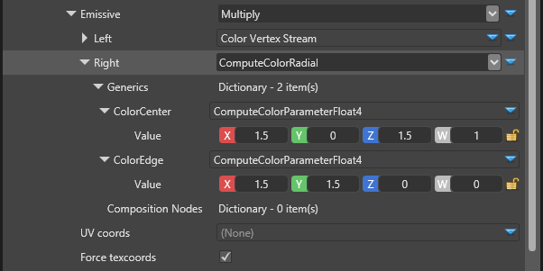

Tutorial: Particle materials
Intermediate Artist Programmer
This tutorial demonstrates how to create custom shaders and materials for a particle system, providing functionality not available in the core engine. It focuses on shaders and rendering. For simulation, see the custom particles tutorial.
If you're not familiar with editing particles, see Create particles.
Start by creating a new Sample: Particles project.
This project contains four scenes, each demonstrating a different way to use particles: AnimatedParticles, ChildParticles, CustomMaterials, and CustomParticles.
Open the CustomMaterials scene.
There are three particle entities in the scene: Rad Particle System, Radial Particle System, and Two Textures Particle System.

Select one of the particle entities and navigate to its source particle system, expanding the emitter in it and its material.
Red particle system
The red particle system has a very simple customization. Since the material maps already provide an option to use shaders as a leaf node input, we can create a custom shader and assign it to that node.
First, create a shader (ComputeColorRed.sdsl) with a derived class for ComputeColor:
class ComputeColorRed : ComputeColor
{
override float4 Compute()
{
return float4(1, 0, 0, 1);
}
};
The only thing this shader does is return the red color for pixel shading every time Compute is called. We'll try something more difficult later, but for now let's keep it simple.
Save the file and reload the scripts in Game Studio. You should see the new shader in Asset View.

If the shader isn't there, reload the project.
Once the shader is loaded, you can access it in the Property Grid under the dynamic emissive material for the particles. Choose a type of shader and, from the drop-down menu, select the shader you just added to the scene.
The particles are red. With Game Studio running, edit and save ComputeColorRed.sdsl to make them yellow.
class ComputeColorRed : ComputeColor
{
override float4 Compute()
{
return float4(1, 1, 0, 1);
}
};
Because Stride supports dynamic shader compilation, the particles immediately turn yellow.
Radial particle system
For the next shader we'll use texture coordinates expose arbitrary values to the editor.
Check ComputeColorRadial.sdsl.
class ComputeColorRadial<float4 ColorCenter, float4 ColorEdge> : ComputeColor, Texturing
{
override float4 Compute()
{
float radialDistance = length(streams.TexCoord - float2(0.5, 0.5)) * 2;
float4 unclamped = lerp(ColorCenter, ColorEdge, radialDistance);
// We want to allow the intensity to grow a lot, but cap the alpha to 1
float4 clamped = clamp(unclamped, float4(0, 0, 0, 0), float4(1000, 1000, 1000, 1));
// Remember that we use a premultiplied alpha pipeline so all color values should be premultiplied
clamped.rgb *= clamped.a;
return clamped;
}
};
This is similar to ComputeColorRed and can be compiled and loaded the same way.
There are several key differences. The shader now inherits from the Texturing shader base class as well. This allows it to use texture coordinates in from the streams. On the material side in Game Studio, we can force the texture coordinates to be streamed in case we don't use texture animation.
The input values float4 ColorCenter and float4 ColorEdge in our shader are permutations. When we load the shader the Property Grid displays them under the Generics dictionary.

The values we set here will be used by the ComputeColorRadial shader for the particles. The rest of the shader simply calculates a gradient color based on the distance of the shaded pixel from the center of the billboard.
Two-texture particle system
This demonstrates how to create custom materials and effects for the particles. The DynamicColor material supports one RGBA channel. For our sample, we'll separate the RGB and A channels, allowing them to use different texture coordinate animations and different textures and binary trees to compute the color.
Parameter keys
Parameter keys are used to map data and pass it to the shader. Some of them are generated, and we can define our own too.
If we define more streams in our shader (ParticleCustomShader), they're exported to an automatically generated class. Try adding the following to ParticleCustomShader.sdsl:
// -------------------------------------
// streams
// -------------------------------------
stage float4 SomeRandomKey;
The generated .cs file should now contain:
namespace Stride.Rendering
{
public static partial class ParticleCustomShaderKeys
{
public static readonly ParameterKey<Vector4> SomeRandomKey = ParameterKeys.New<Vector4>();
}
}
We don't need this stream for now, so we can delete it.
We'll define some extra keys in ParticleCustomMaterialKeys.cs to use in our material and effects.
namespace Stride.Rendering
{
public partial class ParticleCustomShaderKeys
{
static ParticleCustomShaderKeys()
{
}
public static readonly ParameterKey<ShaderSource> BaseColor = ParameterKeys.New<ShaderSource>();
public static readonly ParameterKey<Texture> EmissiveMap = ParameterKeys.New<Texture>();
public static readonly ParameterKey<Color4> EmissiveValue = ParameterKeys.New<Color4>();
public static readonly ParameterKey<ShaderSource> BaseIntensity = ParameterKeys.New<ShaderSource>();
public static readonly ParameterKey<Texture> IntensityMap = ParameterKeys.New<Texture>();
public static readonly ParameterKey<float> IntensityValue = ParameterKeys.New<float>();
}
}
As we saw above, the generated class has the same name and the namespace is Stride.Rendering, so we have to make our class partial and match the namespace. This has no effect on this specific sample, but will result in compilation error if your shader code auto-generates some keys.
The rest of the code is self-explanatory. We'll need the map and value keys for shader generation later, and we'll set our generated code to the BaseColor and BaseIntensity keys respectively so the shader can use it.
Custom Shader
Let's look at ParticleCustomShader.sdsl:
class ParticleCustomShader : ParticleBase
{
// This shader can be set by the user, and it's a binary tree made up from smaller shaders
compose ComputeColor baseColor;
// This shader can be set by the user, and it's a binary tree made up from smaller shaders
compose ComputeColor baseIntensity;
// Shading of the sprite — we override the base class's Shading(), which only returns ColorScale
stage override float4 Shading()
{
// -----------------------------------------------
// Base particle color RGB
// -----------------------------------------------
float4 finalColor = base.Shading() * baseColor.Compute();
// -----------------------------------------------
// Base particle alpha
// -----------------------------------------------
finalColor.a = baseIntensity.Compute();
// Don't forget to premultiply the alpha
finalColor.rgb *= finalColor.aaa;
return finalColor;
}
};
It defines two composed shaders, baseColor and abseIntensity, where we'll plug our generated shaders for RGB and A respectively. It inherits ParticleBase which already defines VSMain, PSMain and texturing, and uses very simple Shading() method.
By overriding the Shading() method we can define our custom behavior. Because the composed shaders we use are derived from ComputeColor, we can easily evaluate them using Compute(), which gives us the root of the compute tree for color and intensity.
Custom effect
Our effect describes how to mix and compose the shaders. It's in ParticleCustomEffect.sdfx:
namespace Stride.Rendering
{
partial shader ParticleCustomEffect
{
// Use the ParticleBaseKeys for constant attributes, defined in the game engine
using params ParticleBaseKeys;
// Use the ParticleCustomShaderKeys for constant attributes, defined in this project
using params ParticleCustomShaderKeys;
// Inherit from the ParticleBaseEffect.sdfx, defined in the game engine
mixin ParticleBaseEffect;
// Use the ParticleCustomShader.sdsl, defined in this project
mixin ParticleCustomShader;
// If the user-defined shader for the baseColor is not null use it
if (ParticleCustomShaderKeys.BaseColor != null)
{
mixin compose baseColor = ParticleCustomShaderKeys.BaseColor;
}
// If the user-defined shader for the baseIntensity (alpha) is not null use it
if (ParticleCustomShaderKeys.BaseIntensity != null)
{
mixin compose baseIntensity = ParticleCustomShaderKeys.BaseIntensity;
}
};
}
ParticleBaseKeys and ParticleBaseEffect are required by the base shader which we inherit.
ParticleCustomShaderKeys provides the keys we defined earlier, where we'll plug our shaders.
Finally, for both shaders we only need to check if there is user-defined code for it and plug it. The baseColor and baseIntensity parameters are from the shader we created earlier.
Last, we need a material which sets all the keys and uses the newly created effect.
Custom particle material
We'll copy ParticleMaterialComputeColor into ParticleCustomMaterial.cs in our project and customize it to use two shaders for color binary trees.
[DataMemberIgnore]
protected override string EffectName { get; set; } = "ParticleCustomEffect";
The base class automatically tries to load the effect specified with EffectName. We give it the name of the effect we crated earlier.
[DataMember(300)]
[Display("Alpha")]
public IComputeScalar ComputeScalar { get; set; } = new ComputeTextureScalar();
[DataMember(400)]
[Display("TexCoord1")]
public UVBuilder UVBuilder1;
private AttributeDescription texCoord1 = new AttributeDescription("TEXCOORD1");
In addition to the already existing IComputeColor, we'll use IComputeScalar for intensity, which returns a float, rather than a float4. We will also add another UVBuilder for a second texture coordinates animation.
var shaderBaseColor = ComputeColor.GenerateShaderSource(shaderGeneratorContext, new MaterialComputeColorKeys(ParticleCustomShaderKeys.EmissiveMap, ParticleCustomShaderKeys.EmissiveValue, Color.White));
shaderGeneratorContext.Parameters.Set(ParticleCustomShaderKeys.BaseColor, shaderBaseColor);
var shaderBaseScalar = ComputeScalar.GenerateShaderSource(shaderGeneratorContext, new MaterialComputeColorKeys(ParticleCustomShaderKeys.IntensityMap, ParticleCustomShaderKeys.IntensityValue, Color.White));
shaderGeneratorContext.Parameters.Set(ParticleCustomShaderKeys.BaseIntensity, shaderBaseScalar);
We load the two shaders: one for the main color and one for the intensity. These are similar to the shaders we wrote manually in the last two examples, except we generate them on the fly directly from the ComputeColor and ComputeScalar properties, which you can edit in the Property Grid. The generated code is similar to the shader code we wrote in the way that it calls Compute() and it returns the final result of our color or scalar compute tree.
After we generate the shader code, we set it to the respective key we need. Check how ParticleCustomShaderKeys.BaseColor is defined in ParticleCustomShaderKeys.cs. In the effect file we check if this key is set, and if yes, we pass it to the stream defined in our shader code.